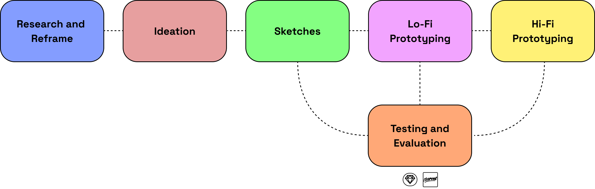

Role: UX Researcher, UX/UI
Timeline: 3 Months (Aug - Oct 2019)
Tools: Sketch, MarvelApp
Overview
VPet is a concept app created during my study at the University of Sydney. It is designed to encourage users to take better care of their personal health through looking after a virtual pet.
Context
One of my classes, User Experience Studio, provided me the opportunity to create a solution to a topic / problem area of my choosing. The problem area that I selected was personal health.
Design Process
Research
Interviews
Interviews were selected as a method of research for full engagement between the interviewer and interviewer. It brought out various behavioural traits of the interviewees that would reflect hidden insights beneficial for research. The interviews were carried out in the work environment of the interviewee to allow them to feel comfortable with answering the questions. A total of 10 interviews were conducted.
Questionnaires
Questionnaires was conducted to gather data quickly from a various range of different surveyees. The method was utlisied to attain mass data to easily draw up insights and conclusions between the responses between surveyees.
Online Ethnography
Online Enthnography was used to investigate past solutions that were created to tackle the issue of unhealthy eating and lack of exericse. The method was used to determine how certain solutions succeeded in some areas and why it failed in others. It provided guidelines and criteria for potential solutions to succeed.
Reframing
Among the working adults we interviewed, the questionnaire results and online ethnography conducted, we found that many full-time working adults suffer from poor time management skills to make their personal health a priority. As a result, the majority of our target group are unable to regularly exercise a minimum of 150 minutes per week, or regularly cook a healthy meal for themselves, causing many to eat out or buy takeaway for their meals. The majority of their time is taken by balancing work and family, or simply being unable to manage their time effectively.
Affinity Diagram
Ideation
Criteria to Evaulate Success
Design Concepts
Design concepts were created through the figure 8 exercise and 3 design concepts were narrowed down: Tap-to-track, Balance Bubbles and House Builder. Feedback was recorded after testing was conducted regarding functionality and design.
Final Concept
- The final concept takes inspiration from our House Builder idea, as well as a similar idea from our initial concepts, to create a Virtual Pet (Vpet) - a reflection of the user.
- This concept requires the user to spend the majority of their time with their Vpet, allowing it to keep track of the user’s physical activities, free time, and even the food they eat.
- Using a Vpet, instead of building a house, better engaged the user and created a more personal connection between them and the app. A Vpet allowed a more dynamic reflection of the user’s lifestyle, as its appearance can be changed depending on the user’s daily or weekly activities.
Sketches
User Testing and Evaluation
5 users tested the first iteration of the paper prototype and revealed some issues with the prototype.
The first round of user testing revealed that some icons did not signify to users their purpose and some functions were either too confusing or unnecessary. There was too much emphasis on the functionalities and visualisation of the screens that common actions were overlooked. The app’s focus was on health however, from this prototype, the app was steered towards a more gamified approach causing users to believe that the app was a game based around the pet rather the pet be a reflection of the user.
Observations
Observations revealed that some buttons were not clearly visible to the user as they were overlooked when the user was presented to the screen, some users overlooked many of the extra functions of app as they did not know or were not interested in. Users were seen to swipe a lot more than to click on the intended buttons or links as the interactions of the customisation pages were not clear due to the limitations of paper. This resulted in users being confused about the purpose of those screens.
Think Aloud
During the think aloud process, users were often confused with the flow of the friends function as the icons and some of the pop ups were not as clear e.g. “why is there a dog here?”. The toggle for difficulty was confusing for users as they did not understand the purpose of having two modes or difficulties for diet and fitness (“Is this a game?”). The think aloud process revealed that many users thought of the app more as a game rather than a lifestyle health app.
Low-Fidelity
High-Fidelity Designs
User Testing and Evaluation
High fidelity had one round of user testing which included 8 people. There were positive comments from users such as the font combinations used which suited the application, the function buttons were well received and the selectedcolours complimented the application.
Some small changes that were for considered for future works included implementing microtransactions for accessories or the unlocking of accessories when the user had achieved a goal e.g. running 10km in a week. The future considerations were tailored towards revenue generation for the app in order for it to launch. Some slight changes that could also occur were some changes of colours.
Design Solution
Although health will always be an issue in the lives of full-time workers, our potential gamified solution is VPet. A virtual pet mobile application that is created to be a digital representation of the user. It attempts to encourage the user to take care of their personal health through taking care of a virtual pet. Some exercises and tasks the app encourages to perform include running, calorie tracking and working out. The app aims to undertake a more friendly and playful approach so it can be easy yet fun to use.